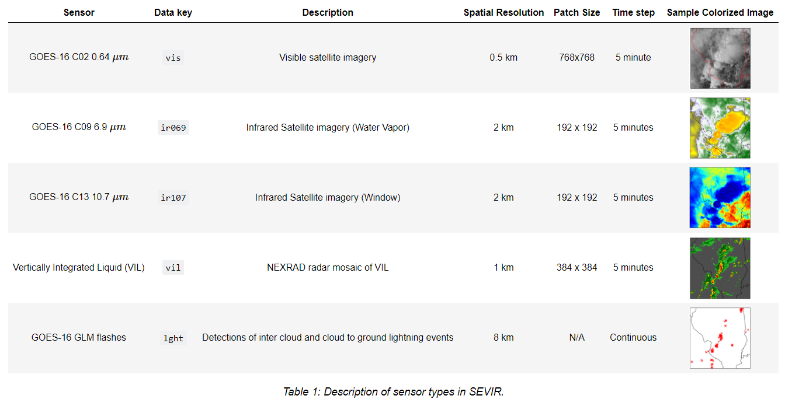
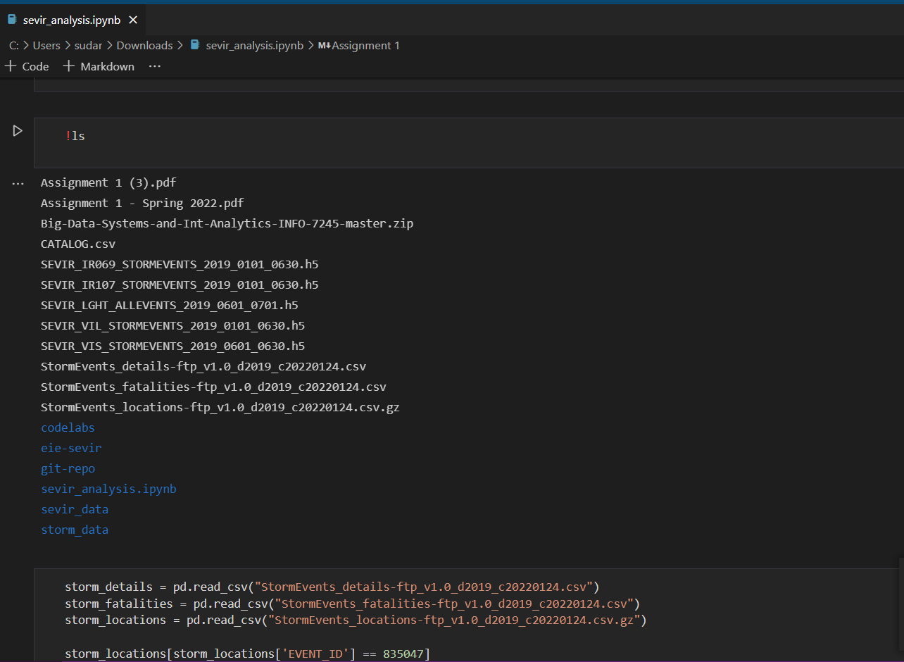
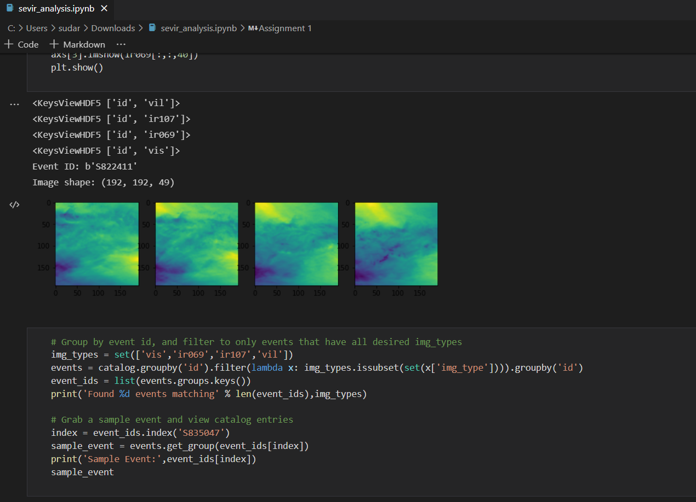
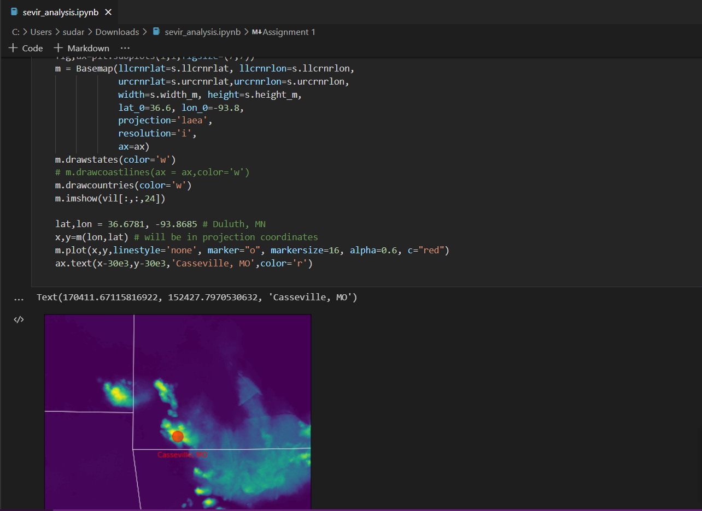
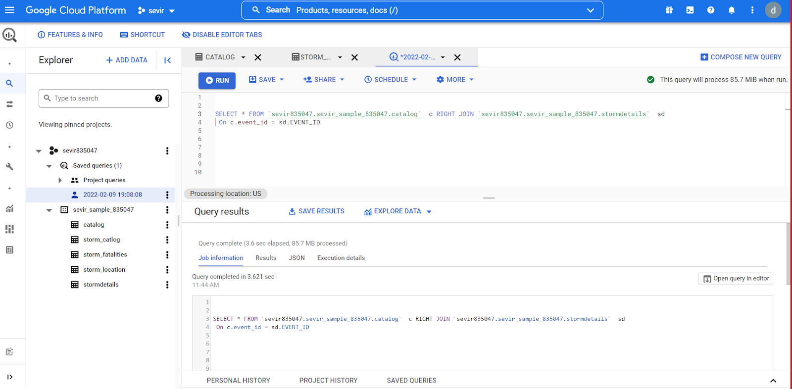
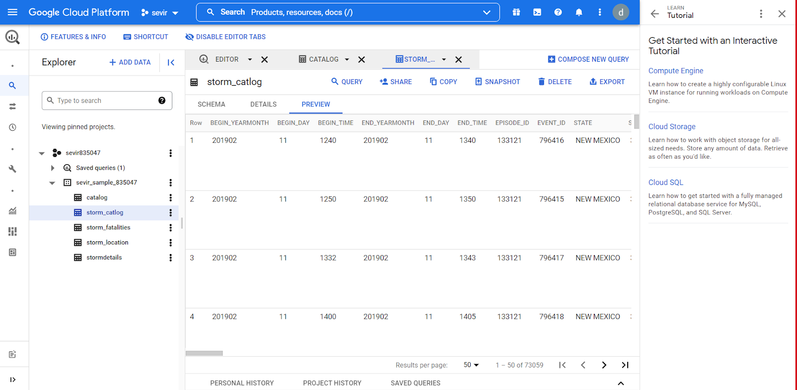
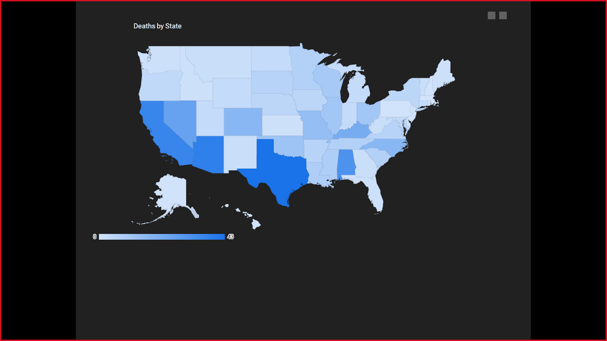
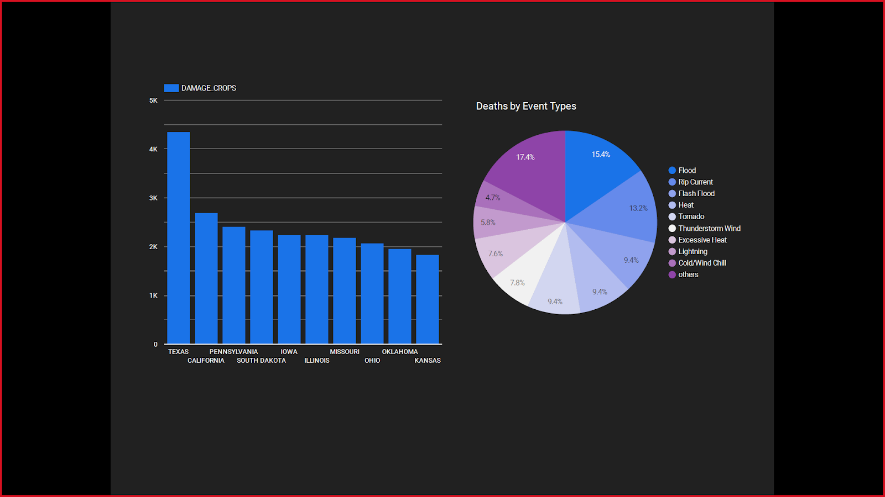
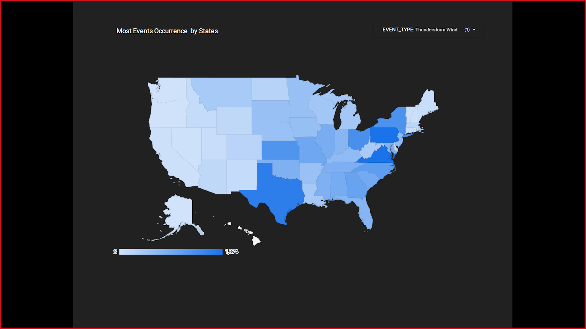
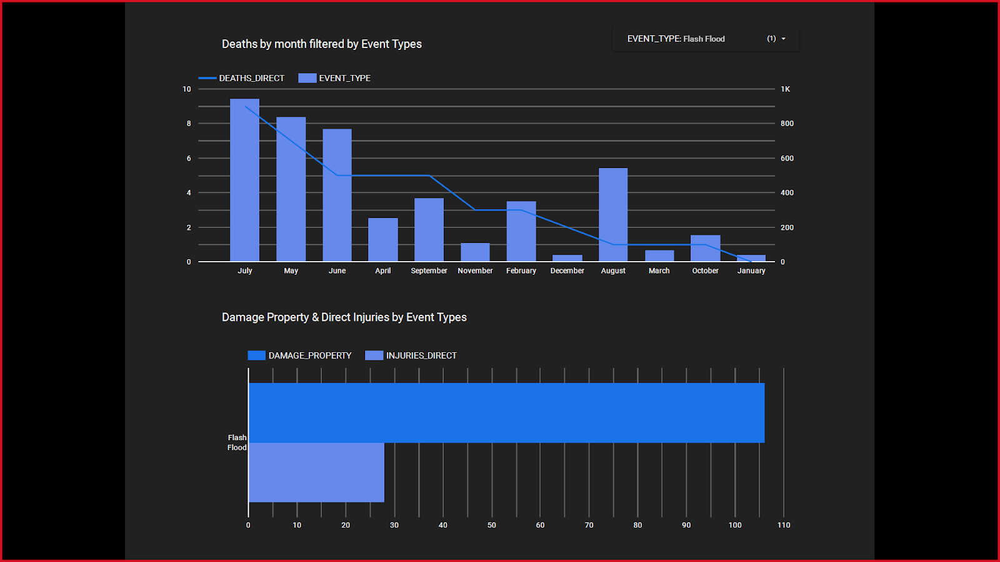

Team Information:
Name | NUID |
Prasanth Dwadasi | 002115654 |
Sudarshan Waydande | 001563532 |
Divyanshu Bhardwaj | 002181815 |
The aim of this assignment is to access and explore the SEVIR data, perform the tutorial on Event ID 835047. Upload the SEVIR and Storm dataset on Google Storage bucket, link the data using Big Query, then perform data visualization on it and create a dashboard using the Datastudio.
Acquired the corresponding HDF5 file for Event Id 835047 from AWS S3 bucket and did data analysis on the weather images.
Implemented a data pipeline using different Google Cloud Platform components like Cloud Storage, Big Query and Data Studio.
Storm EVent ImageRy (SEVIR) is a collection of temporally and spatially aligned image sequences depicting weather events captured over the contiguous US (CONUS) by GOES-16 satellite and the mosaic of NEXRAD radars. Figure 1 shows a set of frames taken from a SEVIR event. SEVIR contains five image types: GOES-16 0.6 µm visible satellite channel (vis), 6.9 µm and 10.7 µm infrared channels (ir069, ir107), a radar mosaic of vertically integrated liquid (vil), and total lightning flashes collected by the GOES-16 geostationary lightning mapper (GLM) (lght). See Table 1 for details. Each event in SEVIR consists of a 4-hour length sequence of images sampled in 5 minute steps. The lightning modality is the only non-image type, and is represented by a collection of GLM lightning flashes captured in the 4 hour time window. SEVIR events cover 384 km x 384 km patches sampled at locations throughout the continental U.S. (CONUS). The pixel resolution in the images differ by image type, and were chosen to closely match the resolution of the original data. Since the patch dimension of 384 km is constant across sensors, the size of each image differs (as shown in Table 1)
Data Sampling in our project:
1. SEVIR: We have used CATALOG.csv which is the metadata for SEVIR image data
2. NOAA Storm Events: Since the data for year 2019 is available for all the image types, we have also utilized NOAA Storm Event data for the year 2019 which consists of the following raw files:
Performed the SEVIR tutorial on Event ID 835047.
Below are some snapshots of the the jupyter notebook



Data Used: We start our data preparation and select a sample of data that we need to analyze and create a pipeline for. Here we have considered Storm data from the year 2019 since the SEVIR data is available for this year for all image types
Created Project and we upload the sampled data on Google Cloud Storage which includes the CATALOG.csv and CSV for Storm Details for the year 2019


Below are some visualization and Dashboards created using Data Studio
https://datastudio.google.com/s/gVtxNpDv0xQ



